Browsing: Vegetables
Vegetables
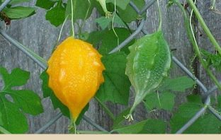
Health benefits of Balsam Apple – Momordica balsamina
7.7
Balsam apple or balsamina scientifically known as Momordica balsamina is a tendril-bearing annual vine belonging to the family Cucurbitaceae. The…
Vegetables
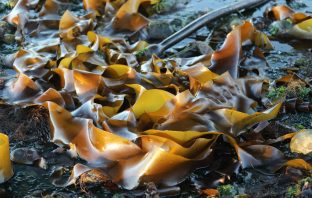
Health benefits of Sea Vegetables
According to archeological studies, sea vegetables have been consumed by the Japanese for more than 10,000 years. In the ancient…
Vegetables
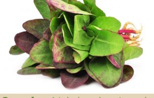
Health benefits of Orach
7.6
Atriplex hortensis, commonly known as mountain spinach or Garden orach is a species of plant in the amaranth family used…
Vegetables
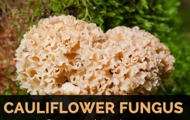
Medicinal uses of Cauliflower Fungus
8.4
Cauliflower Fungus is parasitic on roots of conifers especially on dead and dying coniferous stumps and standing trees. It is…
Vegetables
Beech Mushroom uses
7.8
Beech Mushroom is a most gourmet of Oyster like mushrooms due to its fine texture. The mushroom is hemispheric to…
Vegetables
Nameko Mushroom information and uses
8.1
Nameko mushroom also known as Butterscotch Mushroom, Forest Nameko and Namerako. It was originally cultivated in Japan. It was introduced…
Vegetables
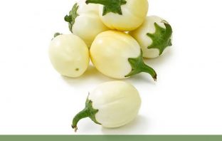
Facts about African Eggplant
7.5
African eggplants, botanically classified as Solanum macrocarpon, are a tropical perennial plant that is closely related to the eggplant and…
Foods
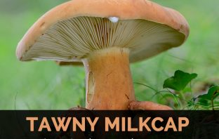
Uses of Tawny Milkcap
[php snippet=1]Tawny Milkcap, also scientifically known as Lactarius volemus is a fungus species in the family Russulaceae. It is widely…
Vegetables
Health Benefits of Wild Bitter Gourd
6.2
Wild Bitter Gourd is a dioecious and perennial scandent herb with glabrous or puberluent, angular stem and unbranched, short and…
Vegetables
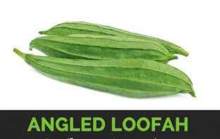
Benefits and uses of Angled Loofah
8.5
Angled Loofah also known as Luffa acutangula belonging to family Cucurbitaceae commonly known as ridge gourd is used as vegetable…
Vegetables
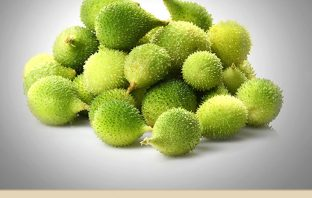
Health benefits of Spiny Gourd
7.7
Momordica dioica, commonly known as spiny gourd or spine gourd is a species of flowering plant belonging to family Cucurbitaceae…
Vegetables
Health Benefits of Spaghetti Squash
8.4
Spaghetti squash is a cool climate crop which can be grown on wide range of soils but does best in…
Vegetables
Health Benefits of Figleaf Gourd
8.9
Figleaf Gourd is a squash species which is cultivated for its edible seeds, green and fruit. Other common names are…
Vegetables
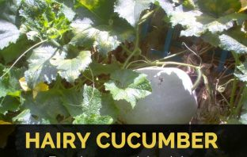
Know about Hairy Cucumber
8.2
Benincasa hispida, which is commonly called ash gourd, winter melon, winter gourd, wax gourd etc. belongs to the family Cucurbitaceae.…
Vegetables
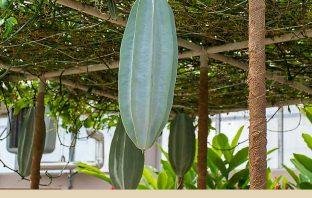
Health Benefits of Fluted Gourd
7.6
Telfairia occidentalis commonly known Fluted Gourd is a tropical vine grown in West Africa as a leaf vegetable and for…
Vegetables
Know about Turkish rhubarb
7.5
Turkish rhubarb with botanical name Rheum Palmatum belongs to rhubarb family. The root helps to stimulate activity in various body…
Vegetables
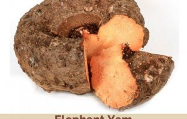
Health benefits of Elephant Yam
7.6
Amorphophallus paeoniifolius, the elephant foot yam or whitespot giant arum, is a highly potential tropical tuber crop belonging to the…
Vegetables
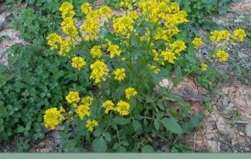
Facts about Wild Mustard
7.8
Sinapis arvensis, the charlock mustard, field mustard, wild mustard or charlock, is an annual or winter annual plant of the…
Vegetables
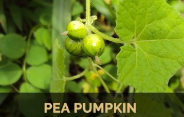
Pea pumpkin
7.7
Pea pumpkin is an annual scandant or trailing herb that grows upto 4 m long of not forested, localities throughout…
Vegetables

Squirting cucumber
8.3
Squirting cucumber is a perennial plant with a large fleshy root which raises several round and thick stems, branching and…
Vegetables
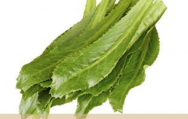
Health benefits of Culantro
7.5
Culantro scientifically known as Eryngium foetidum is a member Apiaceae ⁄ Umbelliferae (Carrot family), which includes carrots, celery, parsley, and…
Vegetables
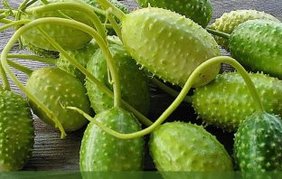
Facts about Wild cucumber
7.6
Cucumis anguria, commonly known as Wild cucumber, cackrey, maroon cucumber, West Indian gherkin, and West Indian gourd, is a vine…
Vegetables
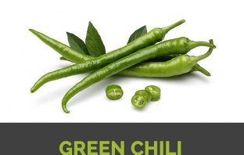
Health Benefits of Green Chilli
7.4
A small shrub like branched plant bearing green and red fruits are used as seasoning or enhancer. Chilies are an…
Vegetables
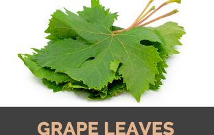
Grape Leaves health benefits and nutrition
7.5
Grape leaves are the leaves of grapevine plant which is used in various cuisines. It is picked fresh from vine…
Vegetables
Baby carrots health benefits and nutrition
7.3
Carrot also known as Daucus carota, is a root vegetable considered to be the health food. Baby carrot is a…
Vegetables
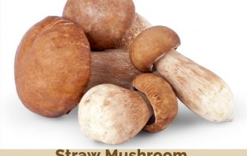
Straw Mushroom facts and nutrition
7.6
Paddy Straw Mushroom, known simply as a straw mushroom, and more formally as Volvariella volvacea, is a type of edible…
Vegetables
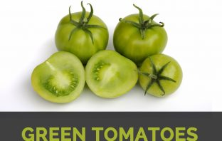
Green Tomatoes nutrition and health benefits
8.1
Green tomatoes are under ripe tomatoes which are firm, sour and unpleasant taste. In cooked form, it becomes delightful, moist…
Vegetables
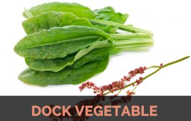
What is Dock vegetable?
7.8
Dock (with scientific name Rumex crispus) is also known from other common names such as yellow dock or curled dock.…
Vegetables
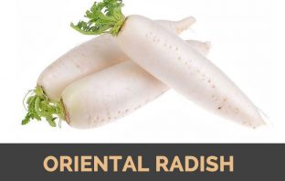
Oriental Radish facts and nutrition
8.3
Oriental radish (scientific name Raphanus sativus L. var longipinnatus Baile) is a winter radish with mild flavor featuring fast growing…
Vegetables
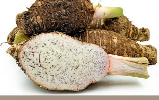
Facts and benefits of eating Tahitian Taro
7.2
Xanthosoma brasiliense commonly known as Tahitian taro, Tahitian spinach is a species of flowering plant in the Araceae (Arum family).…
DISCLAIMER
The content and the information in this website are for informational and educational purposes only, not as a medical manual. All readers are urged to consult with a physician before beginning or discontinuing use of any prescription drug or under taking
any form of self-treatment. The information given here is designed to help you make informed decisions about your health. It is not intended as a substitute for any treatment that may have been prescribed by your doctor. If you are under treatment
for any health problem, you should check with your doctor before trying any home remedies. If you are taking any medication, do not take any vitamin, mineral, herb, or other supplement without consulting with your doctor. If you suspect that
you have a medical problem, we urge you to seek competent medical help. The Health Benefits Times, authors, publisher and its representatives disclaim responsibility for any adverse effects resulting directly or indirectly from information
contained in this website www.healthbenefitstimes.com